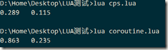
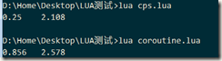
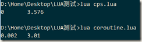
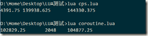

今天和人讨论了一下CPS变形为闭包回调(典型为C#和JS)，以及Lua这种具有真正堆栈，可以yield和resume的coroutine，两种以同步的形式写异步处理逻辑的解决方案的优缺点。之后生出疑问，这两种做法，到底哪一种会更消耗。我自己的判断是，在一次调用只有一两个异步调用中断时(即有2次回调，或者2次yield)，闭包回调的方式性能更好，因为coroutine的方式需要创建一个具有完全堆栈的协程，相对来说还是太重度了。但是如果一次调用中的异步调用非常多，那么coroutine的方式性能更好，因为不管多少次yield，coroutine始终只需要创建一次协程，而闭包回调的每一次调用都必须创建闭包函数，GC的开销不算小。直接上测试代码
- CPS:
local count = 1000000 local list1 = {} local list2 = {} local clock = os.clock local insert = table.insert local remove = table.remove local function setcb(fn) insert(list1, fn) end local function test1() setcb(function() end) end local time1 = clock()--开始 for i = 1, count do test1() end local time2 = clock()--调用 while true do list1, list2 = list2, list1 for i = 1, #list2 do remove(list2)() end if #list1 == 0 then break end end local time3 = clock()--回调完全结束 print(time2 - time1, time3 - time2) - coroutine:
local count = 1000000 local list1 = {} local list2 = {} local clock = os.clock local insert = table.insert local remove = table.remove local create = coroutine.create local yield = coroutine.yield local running = coroutine.running local resume = coroutine.resume local function setcb() insert(list1, running()) yield() end local function test2() setcb() end local function test1() resume(create(test2)) end local time1 = clock()--开始 for i = 1, count do test1() end local time2 = clock()--调用 while true do list1, list2 = list2, list1 for i = 1, #list2 do resume(remove(list2)) end if #list1 == 0 then break end end local time3 = clock()--回调完全结束 print(time2 - time1, time3 - time2) - 输出：  coroutine的调用和唤醒/回调，比闭包回调慢不少
(PS. 这里有个插曲，我之前设置的count = 10000000，但是测试coroutine时报内存不足的错误，因此只能下降一个数量级来测试了)
接下来我把单次调用的回调次数增多
- CPS:
local count = 1000000 local list1 = {} local list2 = {} local clock = os.clock local insert = table.insert local remove = table.remove local function setcb(fn) insert(list1, fn) end local function test1() setcb(function() setcb(function() setcb(function() setcb(function() setcb(function() setcb(function() setcb(function() end) end) end) end) end) end) end) end local time1 = clock()--开始 for i = 1, count do test1() end local time2 = clock()--调用 while true do list1, list2 = list2, list1 for i = 1, #list2 do remove(list2)() end if #list1 == 0 then break end end local time3 = clock()--回调完全结束 print(time2 - time1, time3 - time2) - coroutine:
local count = 1000000 local list1 = {} local list2 = {} local clock = os.clock local insert = table.insert local remove = table.remove local create = coroutine.create local yield = coroutine.yield local running = coroutine.running local resume = coroutine.resume local function setcb() insert(list1, running()) yield() end local function test2() setcb() setcb() setcb() setcb() setcb() setcb() setcb() end local function test1() resume(create(test2)) end local time1 = clock()--开始 for i = 1, count do test1() end local time2 = clock()--调用 while true do list1, list2 = list2, list1 for i = 1, #list2 do resume(remove(list2)) end if #list1 == 0 then break end end local time3 = clock()--回调完全结束 print(time2 - time1, time3 - time2) - 输出：  回调的消耗仍然是coroutine处于劣势，但已经比较接近了。启动的消耗，由于coroutine需要创建比较大的堆栈，相对于闭包来说还是比较重度，因此启动仍然远远慢于闭包回调的方式。
最后，我把一次调用里的异步接口调用次数，改成到10000次(需要封装成多个函数，否则lua会报错：chunk has too many syntax levels)，对比如下(此时次数都改成了count = 1000)：  这个时候coroutine的回调消耗优势就上来了。不过一般来说，实际应用中一次调用不可能调用这么多次异步接口。
之后再来测试内存占用
- CPS:
local count = 100000 local list1 = {} local list2 = {} local clock = os.clock local insert = table.insert local remove = table.remove local function setcb(fn) insert(list1, fn) end local function test1() setcb(function()setcb(function()setcb(function()setcb(function()setcb(function()setcb(function()setcb(function()setcb(function()setcb(function()setcb(function()setcb(function()setcb(function()setcb(function()setcb(function()setcb(function()setcb(function()setcb(function()setcb(function()setcb(function()setcb(function() setcb(function()setcb(function()setcb(function()setcb(function()setcb(function()setcb(function()setcb(function()setcb(function()setcb(function()setcb(function()setcb(function()setcb(function()setcb(function()setcb(function()setcb(function()setcb(function()setcb(function()setcb(function()setcb(function()setcb(function() setcb(function()setcb(function()setcb(function()setcb(function()setcb(function()setcb(function()setcb(function()setcb(function()setcb(function()setcb(function()setcb(function()setcb(function()setcb(function()setcb(function()setcb(function()setcb(function()setcb(function()setcb(function()setcb(function()setcb(function() end)end)end)end)end)end)end)end)end)end)end)end)end)end)end)end)end)end)end)end) end)end)end)end)end)end)end)end)end)end)end)end)end)end)end)end)end)end)end)end) end)end)end)end)end)end)end)end)end)end)end)end)end)end)end)end)end)end)end)end) end collectgarbage("collect") collectgarbage("stop") local count1 = collectgarbage("count") for i = 1, count do test1() end local count2 = collectgarbage("count") while true do list1, list2 = list2, list1 for i = 1, #list2 do remove(list2)() end if #list1 == 0 then break end end local count3 = collectgarbage("count") print(count2 - count1, count3 - count2, count3 - count1) - coroutine:
local count = 100000 local list1 = {} local list2 = {} local clock = os.clock local insert = table.insert local remove = table.remove local create = coroutine.create local yield = coroutine.yield local running = coroutine.running local resume = coroutine.resume local function setcb() insert(list1, running()) yield() end local function test2() setcb() setcb() setcb() setcb() setcb() setcb() setcb() setcb() setcb() setcb() setcb() setcb() setcb() setcb() setcb() setcb() setcb() setcb() setcb() setcb() setcb() setcb() setcb() setcb() setcb() setcb() setcb() setcb() setcb() setcb() setcb() setcb() setcb() setcb() setcb() setcb() setcb() setcb() setcb() setcb() setcb() setcb() setcb() setcb() setcb() setcb() setcb() setcb() setcb() setcb() setcb() setcb() setcb() setcb() setcb() setcb() setcb() setcb() setcb() setcb() end local function test1() resume(create(test2)) end collectgarbage("collect") collectgarbage("stop") local count1 = collectgarbage("count") for i = 1, count do test1() end local count2 = collectgarbage("count") while true do list1, list2 = list2, list1 for i = 1, #list2 do resume(remove(list2)) end if #list1 == 0 then break end end local count3 = collectgarbage("count") print(count2 - count1, count3 - count2, count3 - count1) - 输出：  coroutine的内存占用确实比闭包回调少很多。
因此，要内存还是要性能，这个看自己的取舍了。
本次测试并不全面，还有很多情况没有测试(比如加上多个局部变量，闭包回调的性能和内存占用可能会受影响)。并且因为lua没有自带的CPS变形，callback hell的存在，导致写代码的体验比coroutine差了太多。因此这个测试主要为打算自己实现编程语言的读者做为参考。
最后修改于 2016-08-16